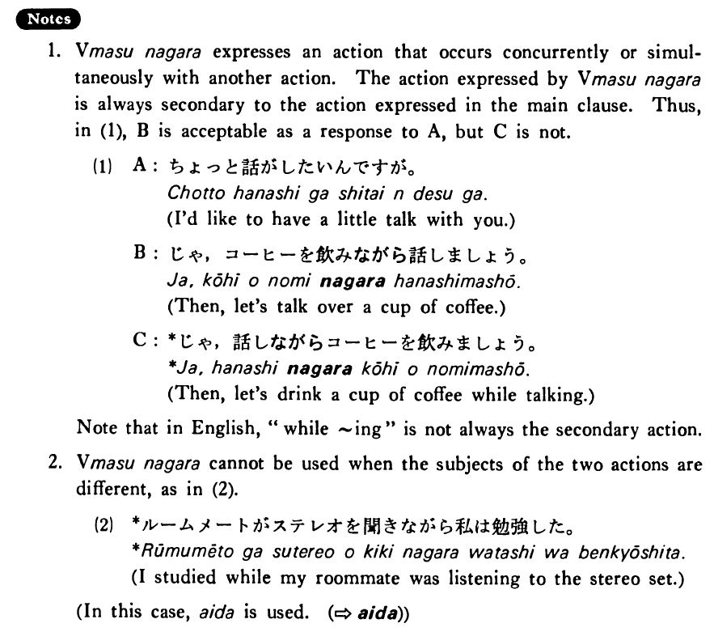

←
DoJG
→
ながら
(B. 269)
Example sentences
(ks).
田口さんはいつも新聞を読み
ながら
朝ご飯を食べる・食べます。
Mr. Taguchi always reads a newspaper while eating his breakfast.
(a).
歩き
ながら
本を読むのは危ないですよ。
It is dangerous to read while walking.
(b).
山口さんは笑い
ながら
私の話の聞いていた。
Mr. Yamaguchi was listening to me with a smile. / While smiling, Mr. Yamaguchi was listening to my story.
(c).
私は寝
ながら
小説を読むのが好きだ。
I like to read novels in bed. / While in bed, I like to read novels.
(d).
ものを食べ
ながら
話してはいけません。
Don’t talk with food in your mouth. / You must not talk while eating things.
(e).
木村君は会社で働き
ながら
学校に行っている。
Mr. Kimura works for a company while going to school.
Formation
Vます
ながら
話し
ながら
While talking/talk while doing something
食べ
ながら
While eating/eat while doing something
